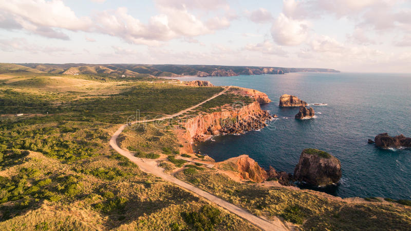

Rota Vicentina’s network of walking trails has gradually evolved, spreading today throughout this magnificent region of the Alentejo and Vicentine coast. While the coastal trails are truly breathtaking, so are the many paths that extend through fields and mountain ranges further into the interior, areas that have been overlooked by tourism for a long time but that nonetheless deserve to be appreciated by hikers.
The Historical Way e the Fishermen’s Trail and the Circular Routes, offer an increasingly complete network of trails, with greater variety and flexibility, to be adjusted to the needs and expectations of all different types of hikers.
The experienced hiker who goes from north to south without hesitation, the family that adjusts to the rhythm of the children, the curious hikers and those who might just be finding their feet will find many different possibilities for combining these trails to create the routes that best suit them.
Welcome to some of the best hiking trails in the world, and have a great hike!
 Go home Show me next!